assets/logo/unx-logotipo.png — sidebar, encabezados compactos y favicon.assets/logo/unx-logo-completo.png — login, onboarding y piezas donde la marca se presenta.
assets/logo/unx-logotipo-blanco.png — sobre azul UNX u oscuros (banda de correos, hero azul).assets/logo/unx-logo-completo-blanco.png — versión con eslogan para fondos azules.Identidad UN-X/2. Diseños Arantza Meneses/Logos LC-UNX.ai (pedir exportación SVG para producción).